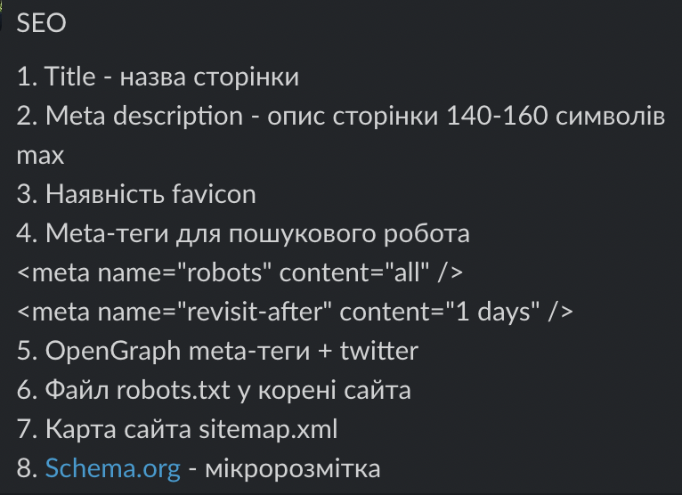
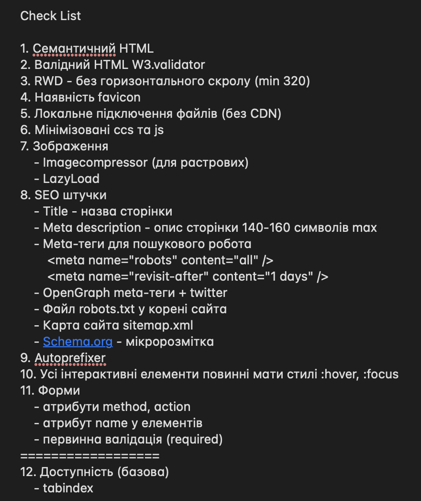

List of lessons with comments and homework
Lesson - 2. Що таке сайт. Налаштування робочого процесу. Вступ до HTML
Reference to homework
Timing
Conclusions
Lesson - 3. Семантика, посилання і HTML5 теги
Reference to homework
Timing
Conclusions
Lesson - 5. Знайомство з CSS
Reference to homework
Timing
Conclusions
Lesson - 7. CSS-селектори
Reference to homework
Timing
Conclusions
Lesson - 9. Блокова модель документа (CSS Box Model)
Reference to homework
Timing
Conclusions
Класс .conteiner должен быть всегда внутри блока.
Footer вегда нужно прибивать к полу (чем угодно, можно Grid или Flexbox
Header всегда нужно фиксировать к потолку. можно делать его "стеклянным" как в 22 уроке.
Lesson - 10. Flexbox
Reference to homework
Timing
Conclusions
Lesson - 11. Вебшрифти, Font Face
Reference to homework
Timing
Conclusions
Lesson - 12. CSS-позиціювання і трансформація
Reference to homework
Timing
Conclusions
Lesson - 13. Побудова форм
Reference to homework
Timing
Conclusions
Lesson - 14. Робота з пре- і постпроцесорами
Reference to homework
Timing
Conclusions
Lesson - 16. Респонсивний вебдизайн (RWD)
Reference to homework
Timing
Conclusions
Не указываем высоту и ширину в твердых величинах - только внутренними padding. Высота может указаться разве что на header и button (исключительно высокие большие по контенту кнопки.
Лого одеваем в ссылку которая при нажатии ведет на главную страницу.
3
Lesson - 19. Адаптивна графіка
Reference to homework
Timing
(12:00) - рассказ про тег picture и его реализация на примере
(28:00) - рассказ про альтернативу picture для IE
(40:00) - проганяем все фотки через оптимизиллу
Conclusions
Width - всегда 100%, height - auto. для начального состояния фотки
Изображение один из самых тяжелых запросов для сервера - поэтому нуждается в вариантах облегчения
мы должны использовать изображение в том размере что есть в макете
Все растровые изображения нужно пропускать через оптимизиллу
Lesson - 21. Система компонування в CSS (CSS Grid Layout)
Reference to homework
Timing
(5:00) - пример создания карт товаров в ИМ на grid и flexbox
(58:00) - доделываем выпадающий бургер
(1:24) - делаем плавный скрол с помощью js
(2:23) - разбираем верхнюю часть работы по примеру Ромы
(2:54) - попытка сделать галерею с помощью примера на CCC Trics (провалилась)
(3:22) - обсуждение верстки домашней работы (свойство columns)
(3:50 - 4:48) - верстка предпоследнего блока из ДЗ
(4:48) - выводы по верстке предпоследнего блока/li>
(5:03) - обсуждение ДЗ на следующий урок
Conclusions
При позиционировании мы нагружаем процессор, при трансофрмациях - нагружаем видео карту. Не нагружайте что-то одно, чтоб слабые компы пользователя могли нормально работать.
Lesson - 22. Практика – верстання макету
Reference to homework
Timing
(25:00) - пример фиксации header на js, плюс правила css и "стеклянный эффект" когда цвет страницы и header одного цвета.
(1:16) - начало показа работы с гит через vc cod
(1:22) - попытка показать как сделать репу через терминал (неудачно)
(1:43) - добавление пользователей в репу (созданную с vc cod
(1:50) - верификация запроса на подтверждение общей работы в одном репрозитории
(1:55) - пример - Саша затер своими имениями чужие правки.
(1:59) - создание новой ветки - правильный вариант работы в команде.
(2:03) - как указать колабаратору заревьювить твои изменения.
(2:19) - создание конфликта
Conclusions
Брейкпоинты добавляем тогда когда в них есть нужда при поломке верстки в случае ресайза на любом размере.
На все элементы которые будут изменяться - растягиваться или ссужаться лучше не давать фиксированные размеры, а делать размеры внутренним padding.
Всегда делаем адаптивным дизайн, даже если этого нет в макете.
"img" всегда ставят width - 100%
Всегда создавай отдельную ветку для новых изменений и только потом сливай ее с мастером. Назвать можно например инициалы и номер таски
Lesson - 23. SEO для розробника
Reference to homework
Timing
(3:53) - поисковый бот в гугле
(10:17) - про метатеги title и description
(18:10) - про метатеги в админке как выглядит заполнение
(29:09) - подключение favicon
(40:30) - метатег robots
(49:40) - метатег open graft - для сервиса ФБ, чтоб делать красивую ссылку с фото и текстом описания
(1:22) - файл robot.txt
(1:27) - формирование sitemap
(1:42) - пример фейсбуковского robot.txt
(1:57) - как сделать тег переход со ссылкой и вложить в него h3 (Cашин опыт)
(2:02 - :12) - scheme org - микроразметка
(2:20) - реальный пример микроразметки
(2:28) - микроразметка в скрипте
Conclusions
Лучшее объяснение про Core Web Vitals Тег description - имеет от 140-160 символов, и лучше давать его каждой странице свой.
Ссылка на Favicon Generator В favicon лучше ставить png или svg
Последовательность метатегов не важна.
В корне проекта находятся теперь index.html, robot.txt, sitemap
В Host указывается только доменное имя например - dimatany.github.io
Микроразметку добавляем в самом конце

Lesson - 24. Проєкт 1. Перший вебсайт з HTML та CSS
Reference to homework
Timing
(01:00) - три варианта создания перозитория ГИТ
(08:53) - обсуждение атрибута loader (Cаша говорит что она плохо работает в браузерах)
(13:00) - lazyload с фоновыми изображениями
(24:00) - выяснение работы опенграфт и ошибок с фб
(29:00) - демострация фб отладчика по опенграфту
(33:00) - демострация кеша в телеграмме - не отображалась картинка
(38:00) - демострация сайтмэп ошибка Сашиной ссылки
(48:00) - бредкрампсы - обьяснение что это такое
(56:00) - объяснение как CMS работает с HTML в динамическом варинате
(1:23) - обсуждение CMS WORDPRESS
(1:50) - рассказ Саши про его студентов
(1:51) - шаблонизаторы для натягивания html на cms
(2:00) - обсуждение вопросов для собеседований
(2:14) - повторение почему нам нужна однопиксельная картинка для lazyload
(2:17) - чек лист для экзамена
(2:44) - чек лист пример минимизации js файла на vs code
(3:06) - формы и требования по ним к проекту
(3:18) - обсуждение первого макета для экзамена
(3:37) - обсуждение второго макета для экзамена
(3:52) - обсуждение третьего макета для экзамена
(3:57) - пример как сделать разные темы (ночь/день)через css
(4:12) - обсуждение урока на понедельник
Conclusions
Для ФБ нужно давать абсолютный адрес к картинке для ее корректного отображения по опенграф
У телеги 30 дней период сброса кеша.
Есть три фреймворка, выучить нужно хоть один, и Ангуляр работает с тайпскриптом
Все работы нужно проверять по чеклисту прикрепленному к этому уроку
Все что можно сделать локально делаем, уменьшение уязвимостей за счет локальных файлов в проекте
JS и все остальные файлы в проекте нужно минимизировать
